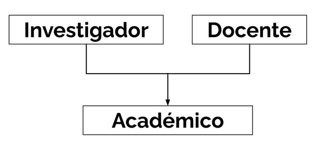

OOP avanzado
Herencia
- La herencia es una relación de especialización y generalización entre clases. De tal forma, que una clase (subclase) hereda atributos y métodos de otra (superclase).
- La subclase posee todos los métodos de la superclase, pero además tiene métodos/atributos propios, que se consideran una especialización.
Terminología
- Si
FurgonEscolarhereda deAuto, también se dice que:FurgonEscolares una especialización de la claseAuto
FurgonEscolares una subclase (o clase hija) deAuto
FurgonEscolarextiende a la claseAuto
Autoes superclase (o clase madre) deFurgonEscolar
Para crear una subclase hay que especificar la superclase en la declaración de la clase
class SubClase(SuperClase):
# Esto crea una SubClase con todos los atributos y métodos
# que tiene la SuperClase.Si queremos añadir atributos propios o queremos modificar cómo se inicializa la clase, debemos modificar el método __init__
class SubClase(SuperClase):
def __init__(self, atrSpC1, atrSpC2, atrSbC):
# La clase almacena los atributos de la SuperClase:
SuperClase.__init__(self, atrSpC1, atrSpC2)
# Agrega un atributo propio:
self.atributo_propio = atrSbC
# Agrega un método propio:
def metodo_propio(self,n):
return n**2
SubClase va a tener todos los atributos y métodos de SuperClase , pero además va a tener ese atributo y ese método propios a ella.Overriding: permite que una subclase implemente una versión especializada de un método que es heredado desde una superclase.
- Basta con volver a definir el método, usando el mismo nombre que tiene en la superclase.
- El método
super()permite la implementación de un método de la superclase sin nombrar explícitamente a la clase superior, de la formasuper().metodo(argumentos)- Es una buena práctica para mejorar la lectura y evitar errores por cambiar el nombre de la superclase o multi-herencias.
Se puede crear una subclase a partir de una clase built-in de Python
class ListaDeContactos(list):
"""
Tiene todos los métodos de las listas
y agrega el método 'buscar'
"""
def buscar(self,nombre):
matches = []
for contacto in self:
if nombre in contacto.nombre:
matches.append(contacto)
return matchesPolimorfismo
- Polimorfismo: propiedad por la que es posible enviar mensajes sintácticamente iguales a objetos de tipos distintos.
- Se trata de utilizar objetos de distinto tipo con la misma interfaz.
- Mecanismos típicos para proveer polimorfimo
- Overriding
Overloading
- Capacidad de definir un método con el mismo nombre, pero con distinta cantidad y tipo de parámetros.
- Capacidad de una función de ejecutar distintas acciones dependiendo del tipo y número de argumentos que recibe.
Overloading de operadores en Python
- Existen muchos operadores en Python que funcionan de forma distinta para cada clase built-in.
- ej. el operador
+suma números, pero también concatena strings y mezcla listas.
- ej. el operador
Es posible personalizar la mayoría de operadores, modificando sus métodos respectivos…
{kind=link}
__repr__ vs __str__
- Retornan una representación en texto (string) para ser usado por
print.- Si se implementa ambos,
printutiliza__str__
- Si se implementa ambos,
__str__está enfocada en una representación legible del objeto (nivel “usuario”), mientras que__repr__es una representación completa (nivel “desarrollador”).
__repr__ puede ser usado para mostrar los elementos de una lista
- Si implementamos solamente
__str__en nuestra clase, al imprimir una lista de objetos no nos va a salir lo que deseamos —> tenemos que implementar__repr__para imprimir una lista de objetos.
Duck typing
“If it walks like a duck and quacks like a duck then it is a duck”
- no importa de qué tipo sea un objeto mientras contenga la acción
Python utiliza un sistema de tipos dinámicos, lo que permite que el tipo de una variable se determine al momento de ejecutar el código (y no al compilarlo ni al escribirlo).

Multiherencia

{kind=link}

- Multiherencia: una subclase puede heredar desde más de una superclase
- Sigue la forma
class SubClase(SuperClase1, SuperClase2):
- Sigue la forma
- Ventajas: flexibilidad, reutilización de código y representación de múltiples roles.
- Desafíos: ambigüedades/conflictos, MRO (Orden de Resolución de Métodos) y complejidad
- Cuando más de una clase base tienen un método con el mismo nombre, el intérprete de Python decide cuál llamar siguiendo el MRO
- Busca en la clase derivada
- Busca en la primera clase base
- Busca en las clases restantes
Problema del diamante
- Existe una jerarquía de diamante cada vez que tenemos más de un “camino” en la jerarquía desde la clase inferior a una clase superior.
Puede ocurrir por dos superclases que derivan de la misma clase

Anfibioimplementaacelerar, que llama a otro método del mismo nombre enTerrestreyAcuático. Además, cada una de estas últimas clases también llaman aacelerarcon respecto a su superclase,Vehículo.Así, una llamada aacelerarenAnfibioproduce dos llamadas aVehículoo simplemente porque una clase deriva de dos clases, sin necesidad de una tercera superclase.
- Esto ocurre porque Python tiene una clase superior
objectde la cual heredan todas las clases que creamos.

Si en la SubClase modificamos el inicializador de tal forma que llama a los iniciadores de las superclases como ClaseA.__init__()yClaseB.__init__(), entonces se va a inicializar 2 veces la claseobject❎ ❎ - Esto ocurre porque Python tiene una clase superior
- Dependiendo del código, esto podría hacer que se produzcan acciones repetidas en la clase superior.
- Para evitar errores, la clase debe preocuparse de llamar a inicializar a la clase que la “precede” en el orden del esquema de multiherencia. Esto se logra usando
super()- El orden de las clases es izquierda → derecha dentro de la lista de superclases desde donde hereda la subclase.
- En otras palabras,
super()llama a la clase que viene antes según el orden que muestra__mro__.
Método __mro__
- Significa method resolution order.
- Muestra el orden en la jerarquía de clases a partir de la clase actual.
- Se basa en el algoritmo C3.
Analiza el MRO de este ejemplo

Solución
M -> A -> X -> B -> Y -> Z -> object
- Puede lanzar
TypeErrorsi se crea un esquema de multiherencia inválido, es decir, donde no se puede crear un MRO consistente.Ejemplo

Solución

Cómo implementar correctamente multiherencia
- Consideraciones
- Si ocupamos
super()en una clase A que viene antes de una clase B según el MRO, esta va a referenciar dicha clase B.
- Para manejar los parámetros que se le pasan al inicializador de una clase con múltiples superclases, se pueden ocupar diccionarios (
**kwargs)
- Si ocupamos
- Protocolo
(1) Declara los atributos propios de cada clase en su respectivo inicializador (
__init__). Además, en cada uno de estos, agrega un “captador” para una cantidad variable de argumentos por palabra clave (**kwargs)class Investigador: def __init__(self, area, **kwargs): ... class Docente def __init__(self, departamento, **kwargs): ... class Academico(Docente, Investigador): def __init__(self, nombre, oficina, **kwargs): #1 ...(2) Dentro de la definición de cada inicializador, asigna los valores a los atributos propios. Además, ocupa
super().__init__(**kwargs)para pasarle los otros kwargs a la clase que siga en el MRO.class Investigador: def __init__(self, area, **kwargs): super().__init__(**kwargs) self.area = area class Docente def __init__(self, departamento, **kwargs): super().__init__(**kwargs) self.departamento = departamento class Academico(Docente, Investigador): def __init__(self, nombre, oficina, **kwargs): #1 super().__init__(**kwargs) self.nombre = nombre- (3) Cuando uno instancie la clase lo debe hacer con un diccionario que contenga los pares atributos-valores para nuestra clase. De esta forma, el intérprete de Python se va a encargar de recorrer la cadena de clases según el MRO, pasándole a cada clase el atributo que le corresponde. Finalmente, cuando llegue a la última clase, le va a pasar un diccionario vacío a la clase
object, lo cual está correcto ya que no acepta ningún argumento.
- (3) Cuando uno instancie la clase lo debe hacer con un diccionario que contenga los pares atributos-valores para nuestra clase. De esta forma, el intérprete de Python se va a encargar de recorrer la cadena de clases según el MRO, pasándole a cada clase el atributo que le corresponde. Finalmente, cuando llegue a la última clase, le va a pasar un diccionario vacío a la clase
- ⚠️ Con respecto al paso (3)
- Si instancias la clase con la cantidad exacta de argumentos (para el total de atributos entre todas las clases que están en la cadena del MRO), entonces el objeto de la clase se va a crear correctamente.
- Si le pasas menos o más argumentos, te va a lanzar error.
- Si ocupas valores por defecto, podrías evitar errores por pasarle menos argumentos de los esperados.
Si creas una clase
Raíz, de tal forma que sea la última en la cadena del MRO y que capte todos los argumentos que sobran, podrías evitar que le lleguen argumentos sobrantes aobjectclass RaizSegura: """Clase base que intercepta kwargs sobrantes antes de que lleguen a object.""" def __init__(self, **kwargs): # Si llegaron kwargs hasta aquí, significa que nadie los reclamó. if kwargs: # Opción 1: Levantar un error claro raise TypeError(f"Error: Se enviaron argumentos inesperados que nadie usó: {kwargs}") # Opción 2: Solo imprimir una advertencia (si prefieres ser permisivo) # print(f"⚠️ ADVERTENCIA: Argumentos ignorados: {kwargs}") # ¡La magia ocurre aquí! Llamamos a object sin argumentos. super().__init__()
Clases abstractas
- Clases abstractas: clases cuya intención no es ser instanciada, sino que sirven para modelar otras clases.
- Contienen 1 o más métodos abstractos, los cuales deben ser sobre-escritos (implementados) por sus subclases.
Para crear una clase abstracta se ocupa la clase ABC y el decorador abstractmethod , ambos provenientes del módulo abc
from abc import ABC, abstractmethod
class Base(ABC): ## al heredar de ABC, la clase Base se define como abstract
@abstractmethod ## Esto hace que metodo_1 sea abstracto. Una subclase de Base está obligada a implementarlo.
def metodo_1(self):
pass
@abstractmethod
def metodo_2(self):
pass
# Una subclase válida* se vería como sigue
# *implementa por lo menos todos los métodos abstractos de la superclase abstracta
class SubClase1(Base):
def metodo_1(self):
pass
def metodo_2(self):
pass
- Las subclases no necesitan tener sus propias definiciones de los métodos abstractos, también pueden ocupar la definición de la clase abstracta usando
super()
- Si bien es obligatorio que una subclase implemente todos los métodos abstractos, esta última también puede definir sus propios métodos e incluso ocupar métodos no-abstractos de la clase abstracta.
Decoradores
- Un decorador es una función (callable o invocable) que toma otra función como input y retorna una versión modificada de esta última.
- Permiten modificar el comportamiento de una función, sin cambiar las líneas de código que la componen.
Objetos de primera clase
- Las funciones en Python son objetos de primera clase, por lo que
- Puedes asignar funciones a variables
Puedes ocupar funciones como argumentos para otras funciones
# función regular que espera un nombre como string y retorna un string def decir_hola(nombre: str) -> None: return f"Hola {nombre}" # función que espera una función como argumento y retorna una función def saludar_dani(funcion_saludadora): return funcion_saludadora saludar = saludar_dani(decir_hola) print(saludar("Dani"))- Puedes almacenar funciones en estructuras de datos
- Tienen atributos (puedes agregar o acceder dinámicamente a los atributos de una función)
Sintaxis de los decoradores
Se pone el símbolo @ seguido del nombre del decorador, es decir, @nombre_decorador . Luego, en la línea de abajo empieza la definición de la función que recibe como argumento.
#Cuando vemos este código:
@decorador
def mi_funcion():
pass
######
# Es realmente una abreviación para:
def mi_funcion():
pass
mi_funcion = decorador(mi_funcion)
Definir un decorador D sigue el mismo formato que la definición de cualquier otra función, solo que en este caso (1) recibe una función A como argumento y (2) define otra función B que modifique a A, de tal modo que D retorna B.
def agregar_exclamacion(func):
def decorada():
return func() + "!"
return decorada
@agregar_exclamacion
def decir_hola():
return "Hola"
print(decir_hola())Función property y decorador@property
- En el paradigma OOP, si uno quiere trabajar con atributos privados, se deben definir métodos específicos para obtener el valor de estos (getters) y para actualizar el valor de estos (setters).
property(get, set, del)es una función built-in que crea un atributo administrado en una clase.- Permite definir un getter, setter y deleter
- La función se llama como
property(fget=None, fset=None, fdel=None), donde:fgetcapta el atributo.
fsetsetea el atributo (le asigna un valor)
fdelborra el atributo
- Si uno quiere ocupar directamente la función
propertypara implementar los métodos para un atributo privado, debe poner una línea de la formavariable = property(a,b,c)en la definición de la claseDonde
variablees el nombre público que va a recibir el atributo afuera de la clase ya,b,cson nuestras implementaciones de las funciones respectivas.Considere que una instancia es
pepa:ase llama cuando accedemos al valor del atributo —>pepa.variable
bse llama cuando modificamos el valor del atributo —>pepa.variable = 8
cse llama cuando borramos el atributo —>del pepa.variable
Ejemplo
class Circulo: def __init__(self, radio): self._radio = radio # atributo a proteger, privado # Getter para el radio def get_radio(self): print("Obteniendo el radio...") return self._radio # Setter para el radio, que asegura valores positivos def set_radio(self, value): if value >= 0: self._radio = value else: print("El radio no puede ser negativo") # Metodo que retorna el area del circulo def area(self): print("Obteniendo el área...") print("Area:",3.14 * self._radio ** 2) # Definimos propiedades usando property() radio = property(get_radio, set_radio) c = Circulo(5) print("Radio:", c.radio) c.area() # Intentamos cambiar el radio a un valor negativo c.radio = -3 c.area() # Cambiamos el radio a un valor válido c.radio = 10 c.area()
- Alternativamente, se puede ocupar el decorador
@propertypara definir un método como un atributo de solo lectura.- Se pone
@propertyarriba de la definición de la función getter. El nombre de dicho método (ej.nombre_publico) va a ser el nombre que se va a utilizar para acceder al atributo privado afuera de la clase.
- Luego, las implementaciones del setter y el deleter ocupan decoradores de la forma
@nombre_publico.settery@nombre_publico.deleter
Ejemplo
class Email2: def __init__(self, address): self._email = address @property def email(self): return self._email @email.setter def email(self, value): if '@' not in value: print(f"El string {value} no parece una dirección de correo.") else: self._email = value # el setter le asigna un valor al "atributo" mail = Email2("profe1@gmail.com") print(mail.email) mail.email = "profe2@gmail.com" print(mail.email) mail.email = "profe2.com" - Se pone
Métodos estáticos
- Son métodos que pertenecen a una clase, pero que no dependen de la información de la clase ni de atributos de la instancia.
- —> no requieren ningún atributo principal como sucede con los métodos normales, o sea, no requiere
self
- —> no requieren ningún atributo principal como sucede con los métodos normales, o sea, no requiere
- Para declarar un método estático, solo necesitamos usar el decorador
@staticmethody nuestro método sin elself
- Luego, para ocupar un método estático afuera de la clase basta con usar
Clase.metodo_estatico()
Ejemplo
class MiMath:
@staticmethod
def sumar(num1, num2):
return num1 + num2
@staticmethod
def restar(num1, num2):
return num1 - num2
print(MiMath.sumar(5, 6))
print(MiMath.restar(14, 1))
Diagrama de clases
- Herramienta que permite visualizar fácilmente tanto las clases que componen un sistema, así como también sus atributos, métodos y las interacciones que existen entre ellas.
- Pertenece al conjunto de herramientas provistas por el Lenguaje de Modelado Unificado (UML).
Elementos de un diagrama de clases

Clases
- Se representan por un rectángulo dividido en tres niveles:
- Nombre de la clase
- Atributos → especificar nombre y tipo de variable
- Métodos → especificar nombre, parámetros que recibe y tipo de variable esperado para su retorno
Ejemplo

Relaciones
- Relaciones de contención
- Un objeto contiene a otra clase como atributo.
- Estrictamente existen 2 tipos
Composición (rombo ⧫)
- El tiempo de vida del objeto que componemos está condicionado por el tiempo de vida del objeto que lo incluye.
- ej. una clase
Mariono sigue si eliminamos la claseJuego
Agregación (rombo ◊)
- El tiempo de vida del objeto que agregamos es independiente del tiempo de vida del objeto que lo incluye.
- ej. una clase
Bowsertiene un atributoself.goombas = []que completa con una cadena de objetos de claseGoomba. Si muereBowser, no necesariamente mueren losGoomba
- Para el curso no se ocupa esa distinción entre rombos. En otras palabras, una relación de contención se va a denotar por ⧫ o ◊.
Ejemplo de diagrama de clases

- Relaciones de herencia
- Una subclase hereda los atributos y métodos de una superclase.
- Se representa por una flecha que apunta hacia la superclase ( ▷)
- En las subclases solo se ponen los métodos/atributos propios, o sea, no se repiten los heredados.
Ejemplo

Metaclases
- La razón por la que elementos se pueden guardar en variables y entregar como argumentos es porque tienen un tipo de dato, es decir, son instancias de una clase.
- Los enteros son instancias de la clase
int
- Las listas son instancias de la clase
list
- Los enteros son instancias de la clase
- Una metaclase es una clase cuyas instancias son otras clases.
- El comando
type()recibe un argumento y retorna su tipo de dato, es decir, la clase a la que pertenece la instancia.- Si no se especifica la metaclase en la definición de una clase, se toma la metaclase por defecto en Python, o sea,
type
- Si no se especifica la metaclase en la definición de una clase, se toma la metaclase por defecto en Python, o sea,
Para declarar que una clase tiene cierto tipo se añade el argumento por palabra clave metaclass=tipo_de_clases
class Gato(metaclass=type):
def __init__(self, nombre):
self.nombre = nombreCreación de metaclases
- Las metaclases se declaran como clases que heredan de
type
- Principal utilidad: controlar la creación e instanciación de una clase.
Usos específicos
- Clases que no pueden tener subclases
- Clases que queremos instanciar una única vez
Método __new__
class MetaClaseImpresora(type):
def __new__(cls, nombre, clases_base, diccionario):
# Creamos la clase usando el __new__ de type
clase = super().__new__(cls, nombre, clases_base, diccionario)
# Retornamos la clase creada
return clase__new__ . Si queremos que se cree la clase, debemos llamar al __new__ de type y retornar la clase.- Permite controlar la creación de una clase.
Parámetros
clsrepresenta la metaclase actual
nombrenombre de la clase
clases_basetupla con las clases de las que hereda la clase instanciada
diccionariocontiene la información de la clase instanciada
Ejemplos de uso
class MetaFinal(type):
def __new__(cls, nombre, clases_base, diccionario):
# Revisamos las clases base de la clase que se está creando
for clase in clases_base:
# Si la clase es instancia de la metaclase, no puede ser creada
if isinstance(clase, cls):
print(f'No puede crearse la clase {nombre}')
return None
print(f'Clase {nombre} creada correctamente')
return super().__new__(cls, nombre, clases_base, diccionario)
class NoHeredable(metaclass=MetaFinal):
def __init__(self, *args, **kwargs):
super().__init__(*args, **kwargs)
class ClaseImposible(NoHeredable):
def __init__(self, *args, **kwargs):
super().__init__(*args, **kwargs)__new__ que permite crear una clase que no puede heredarse, es decir, no puede tener subclases. En particular, consiste en crear una metaclase que defina este comportamiento para las clases que no son heredables. Luego, si uno crea una clase de este estilo (no-heredable) y trata de crear otra clase que la herede, entonces va a ocurrir un error.class MetaTransformaPaladin(type):
def __new__(cls, nombre, clases_base, diccionario):
# Cambiamos el nombre de la clase
nuevo_nombre = 'Paladin'
# Cambiamos las clases base
nuevas_clases_base = (Guerrero,)
# Actualizamos el diccionario con el nuevo atributo
diccionario['defensa'] = 100
# Llamamos al __new__ de type con los nuevos argumentos
clase = super().__new__(cls, nuevo_nombre, nuevas_clases_base, diccionario)
return clase__new__ que permite cambiar el nombre de la clase, las clases de las que hereda y agrega un atributo
Método __init__
- Permite controlar la instanciación de una clase.
- Ocupa los mismos parámetros que
__new__, pero en lugar declsocupaself
- No permite modificar cosas propias de la clase como su nombre o sus clases base.
- Ocupa los mismos parámetros que
Podrías implementar una metaclase como __eq__
class MetaClaseImpresoraInit(type):
def __init__(self, nombre, clases_base, diccionario):
# Creamos la clase usando el __init__ de type
clase = super().__init__(nombre, clases_base, diccionario)
# Retornamos la clase creada
return claseEjemplos de uso
class MetaAgregaDefensa(type):
def __init__(self, nombre, clases_base, diccionario):
# Actualizamos el diccionario agregando el atributo defensa
self.defensa = 100
clase = super().__init__(nombre, clases_base, diccionario)
return clase__init__ que se encarga de instanciar la clase y agregarle un atributoCreación de instancias
- Un callable es un objeto cuyo método
__call__está implementado.
- Cuando uno crea una instancia hace
NombreClase(), de modo que se llama a__call__de la metaclase, que luego se encarga de llamar al__init__de la clase y así crear la instancia correctamente.- —> Para modificar la creación de instancias, uno puede modificar el método
__call__en la metaclase.
- —> Para modificar la creación de instancias, uno puede modificar el método
__call__recibe como argumentos aclsy un número variable de argumentos (que depende de cada clase) que pueden ser organizados usando*argsy**kwargs
Ejemplos de uso
class MetaImprimeInstancias(type):
def __call__(cls, *args, **kwargs):
# Opcional:
print('LLamando a __call__ de MetaImprimeInstancias')
print(f'Instanciando la clase {cls.__name__} con args: {args} y kwargs: {kwargs}')
# Clave:
instancia = super().__call__(*args, **kwargs) #1
return instancia__call__ de type , el cual se encarga de manejar la memoria y llamar al __init__ de la clase.class MetaSoloUna(type):
def __call__(cls, *args, **kwargs):
if not hasattr(cls, 'instance'):
cls.instance = super().__call__(*args, **kwargs)
return cls.instance